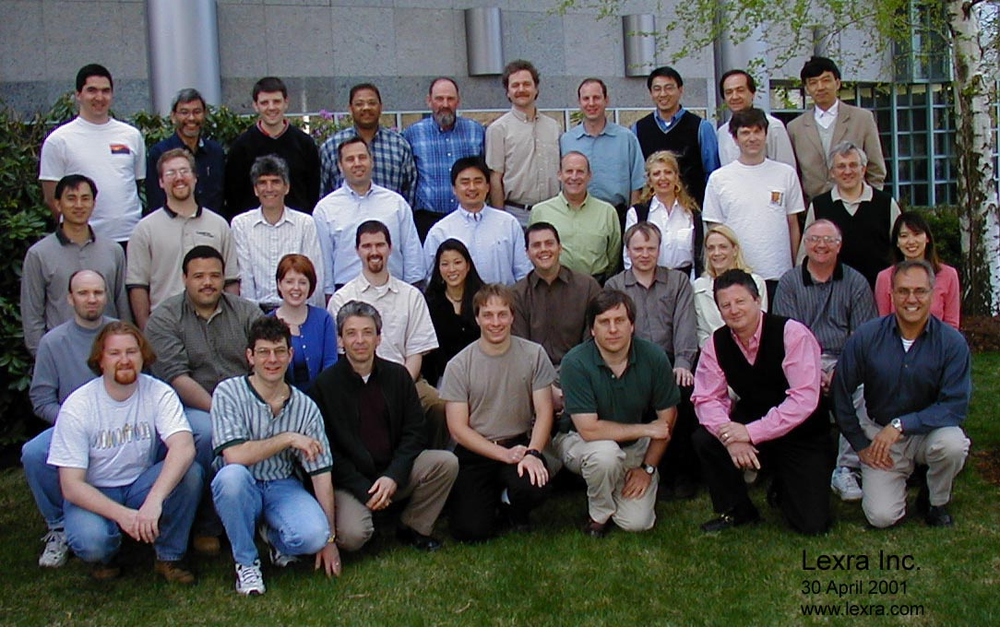
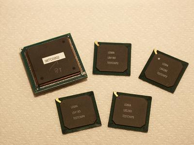

| top row: Darius Rad (RTL design & layout), Jonah McLeod (marketing), Andy Young (RTL design), Franklin Hooker (software), John Fitzpatrick (accounting), Bob Gelinas (architecture, RTL design), Elliot Mednick (RTL design), Luis Ancajas (sales), Irving Gold (sales), Duncan Xue (software) |
| next row: Tat Ng (layout), Charley Lind (verification), Sol Katzman (RTL design), Charlie Hauck (VP Engineering), Charlie Cheng (Founder & CEO), Pat Hays (Founder & CTO), Terri Pollman (manager of operations), Frank Kelly (FAE), Pascal Cleve (software) |
| next row: Chris Hanna (software), Todd Snyder (RTL design), Deirdre O'Sullivan (office manager), John Thomson (verification), Janet Kikuchi (FAE), Greg Kahlert (FAE), George Wall (FAE), Michelle Robinson (office manager), Dave Kehs (software), May Lee (FAE) |
| bottom row: Michael Cotsford (RTL design), Sam Rosen (RTL design & FAE), Peter Elardo (RTL design), Jonah Probell (RTL design), Nick Payton (sys admin), George Indaco (sales), Vic Markarian (sales) |
| employees not pictured: Bill Rubin (EDA), Darlene Hopkins (office manager), Kevin Joyce (layout), Dave Burns (sales), Rob Galuzzo (sales), Bob Williams (FAE), Mitchel Chang (sales), Luis Morales (FAE), Anders Berglund (FAE), Paul Pickering (sales), John Sims (sales), Mark Laich (sales), Kathleen Leavitt (marketing), Ardy Kong (layout), Gary Huey (sales), Rich Newton (FAE), Julie Chen (sales), Mariya Kuznetsova (software), Jim Lindstrom (CFO), Ethan Berger (verification), Tom Reid (CFO), Ken Greenberg (software), Derrick Chen (RTL design), Sing Chan (EDA), Tejinder Jaswal (layout), Amit Sethi (verification), Art Tomasino (engineering manager), Bob Bloom (software), Kartik Srinivasan (verification), Jim Kilham (verification), Prasad Sabada (marketing) |

LX4080, LX4180, LX4280, LX5180, and LX5280 ASIC test chips